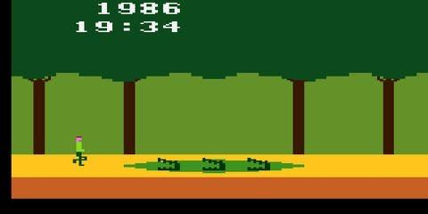

Die Nerd Enzyklopädie 6 - Die Entstehungsgeschichte von Activision
Activision gehört zu den erfolgreichsten Unternehmen der Videospiel-Industrie und die Entstehung ist eng verknüpft mit dem Untergang eines Videospiel-Pioniers: Atari. Der Grund: Fehlentscheidungen und Ignoranz [GAME1].

Aber von Anfang an: Atari wurde 1972 von Nolan Bushnell und Ted Dabney gegründet. Atari produzierte sowohl Spielecomputer als auch Spiele und war zu der Zeit genau das, was man heute als „Start-Up“ bezeichnen würde: Gute Stimmung, gutes Produkt.
Das wohl erste populäre Computerspiel Pong stammte von Atari. Der Atari 2600 ist eine der ersten Konsolen und kann wohl mit Fug und Recht als Kulturgut bezeichnet werden. Ab Mai 1974 arbeitete sogar der spätere Apple-Gründer Steve Jobs für Atari. Kurzum: Es lief bei Atari.
Trotz des Erfolg des Unternehmens konnte nicht genug Kapital aufgebracht werden, um die Forschung für neue Technologien voranzutreiben. Das Unternehmen wurde deshalb 1976 an Warner Communications verkauft — schon damals ein bedeutender Player in der Unterhaltungsindustrie.
Bushnell musste das Unternehmen 1978 verlassen, um Platz zu machen für Raymond Kassar. Und mit Warner und Kassar endete die lockere Start-Up-Mentalität. Kostenoptimierung und Disziplin standen von nun an auf der Tagesordnung. „The days of hot-tubbing in the office were over“, so Crane [GAME2].
Die Sparkur hatte Erfolg: Anfang 1979 veröffentlichte das Management die Zahlen für das Vorjahr. Das Unternehmen machte mit dem Verkauf von Spiele-Cartridges einen Gewinn von 100 Mio. USD. Es ging steil bergauf.
Die vier Top-Programmierer David Crane, Larry Kaplan, Alan Miller, and Bob Whitehead konnten sich darüber nicht so richtig freuen. Zusammen hatten die vier mehr als die Hälfte der Spiele produziert, gleichzeitig verdienten sie aber gerade einmal 22.000 USD pro Jahr.
Sie beschwerten sich bei Kassar und forderten ihren Anteil am Erfolg. Doch der winkte ab. Für ihn war die Entwicklungsarbeit nicht wertvoller als z.B. die Montage der Cartridges am Fließband [GAME2]. Seine Devise lautete „Kostenreduzierung um jeden Preis“. Gehaltserhöhungen und Boni kamen für ihn nicht infrage. Eine fatale Fehlentscheidung.
Die vier Entwickler verließen das Unternehmen, um Activision zu gründen. 1981 verließ auch Jay Miner, Chefentwickler für die Atari-Heimcomputer, das Unternehmen und gründete seinerseits Amiga — ein weiteres populäres Videospiel-Unternehmen.
In einem Interview mit der InfoWorld in 1983 beschrieben Kaplan und Cane die damalige Situation und wie Kassar auf ihre Gehaltsforderungen reagierte:
‘I’ve dealt with your kind before. You’re a dime a dozen. You’re not unique. Anybody can do a cartridge.’” (Kassar laut Kaplan in InfoWorld, 1983)
Zwischen den beiden Unternehmen entbrannte ein Konflikt, vermutlich auch getrieben durch den angekratzten Stolz von Atari. Dabei gab es dafür keinen Grund: Die Spiele von Activision waren durchaus erfolgreich und wirkten sich so auch auf den Verkauf der Atari-Konsolen aus.
Kassar musste Atari 1983 nach einem Börsenskandal verlassen. Das Unternehmen versank in der Folge in der Bedeutungslosigkeit, wechselte mehrfach den Besitzer und meldete 2013 Insolvenz an. Dank einer Crowdfunding Kampagne in 2020 gelang mit der Retro-Konsole Atari VCS die, naja, sagen wir mal “Rückkehr”. Atari ist neben Nintendo, Sony oder Microsoft eher ein kleines Licht am Entertainment-Firmament.
Activision war 3 Jahre nach seiner Gründung bereits 300 Mio. USD wert. Der Erfolg von Activision beflügelte die ganze Branche. Nachahmer überschwemmten den Markt mit Spielen, die lange nicht mit der Qualität von Activision mithalten konnten. Ein Preiskampf entbrannte und schließlich platzte die Blase. Viele Spiele-Hersteller gingen pleite und auch Activision machte ein paar harte Jahr durch.
Das Unternehmen wurde umbenannt, aufgekauft, musste ebenfalls Insolvenz anmelden und erweiterte sein Portfolio. Mitte der 1980er Jahre hatten die vier Gründer das Unternehmen schon wieder verlassen. Miller und Whitehead gründeten Accolade. Kaplan kehrte als Vizepräsident zurück zu Atari. Crane verließt Activision als letzter und gründete mit Gary Kitzen Absolute Entertainment.
Heute ist Activision der zweitgrößte Spielehersteller der Welt mit über 4.000 Mitarbeitern.